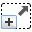

Loading a Patient Anatomy
To load a patient anatomy, click the appropriate button.
In the standard
Select directory
dialog, select the directory with the desired data set.
The patient anatomy will be loaded and displayed in the
RTView
window.
The isocenter will be marked with a red point.
In order to make all representation options available, enlarge the window to the size of the program window by clicking the
Maximize
button.
